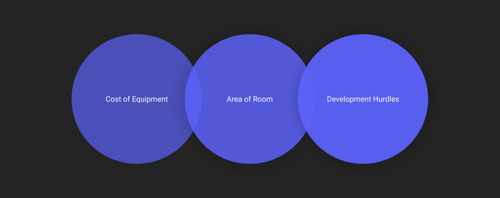
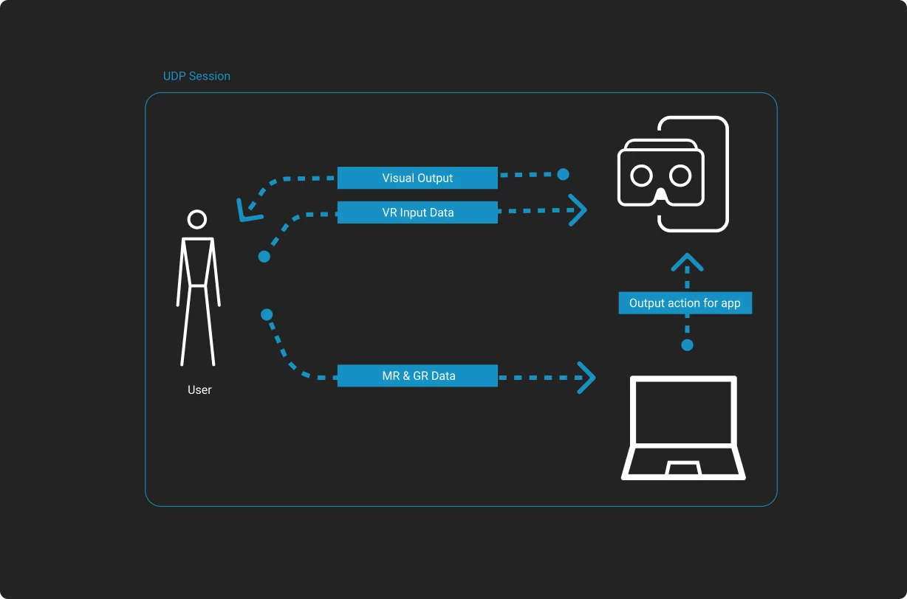

We have come a long way from standard means of interaction with a computer. The recent developments in the meta-verse and the research on virtual reality allowed us to explore technologies like Virtual Reality, motion gesture recognition, and human language processing to create an immersive experience for users.
Along with the increase in such modern technologies, the cost of implementing them also increases, making it harder to create a sustainable market for such products.
In this project, we explore one of the possible ways to combine various low-cost technologies to create an intuitive virtual environment with motion-based interaction in a way that is both cost-effective and easy to use.
Initially, we researched the present implementation of the motion-based system in virtual reality and all of its caveats. Following are some challenges in using VR and MR.
Major problems identified during research
Cost of Equipment
Modern VR headsets are expensive, and the majority of our target audience can not afford them. In South Asian countries, these devices have become even more expensive due to duties and taxes on importing them.
Area of Room
Adequate space is required to use the VR equipment, which can be difficult for smaller living spaces.
Another problem is that some models of VR headsets are not wireless. There can be instances in which the wires become an obstacle in the usage of the system.
Application Development
Since the virtual environment contains 3D-generated graphics, therefore integration becomes difficult during development.
To create a cost-effective tool that allows user to interact with virtual envoirnment using motion-based input.
The first step in the plan was to gather all the requirements for the product. Fortunately, the team’s prior experience in developing video games in VR was helpful in this phase. We quickly came up with a rough sketch of how the user will be using the product.
A rough system diagram for our solution
There are a few key design decisions considering the challenges identified during the research.
Using Fibrum SDK
Our design didn’t need an expensive VR headset because we were not using built-in functionality, so we decided to go with the cheapest and readily available VR set. While google’s cardboard SDK is a common choice, it fails to start on devices with no gyro sensors. Since most of our target audience might not be able to afford high-end mobiles with gyro, we considered Fibrum SDK.
Using RGB Cameras
While a better option would be to go for a depth-sensing camera, at the time of designing the product, Microsoft discontinued its Kinect project. Therefore, we decided to go with an ordinary webcam present on a laptop.
Using Wireless Devices
Since all the equipment is wireless, the product can be used easily without worrying about wires coming in the way.
Designing Application
Since we wanted to simplify the software, we focused on making the software straightforward. We also added voice-based commands to make the experience more intuitive and immersive.
Motion Recognition API
There were very few motion recognition APIs that worked without a depth-sensing camera when we started the project. Most of them were in their beta phase, so we decided to incorporate gestures and hand motion recognition rather than full-body motion detection.
Network Device
We decided to use a private User Datagram Protocol (UDP) network session for each instance of the program, reducing the overall latency due to the network being locally hosted.
Language Processing API
Since active language processing requires a lot of computational power, our handheld phones couldn’t keep up with two simultaneously running processes without heating up. Therefore, we decided to split the application running on laptop and mobile, connected wirelessly.
Developing Application
The application was created using unity3D so that we could reduce the specification requirements of the device. Integrating network-based communication and other APIs was considerably easy when developing it on Unity3D.
The video below is the POC we conducted for the system we designed. The POC video demonstrates the use of our system for a motor skill based video game.
The project indicated the changing dynamics of human-computer interaction, where developing tools and applications demand a newer perspective.
Secondly, it also showed the relation between the cost and the complexity of the product. The expensive equipment does provide extensive features that could improve the overall experience.